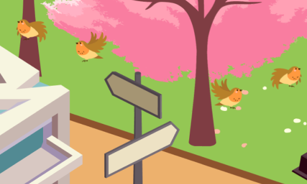
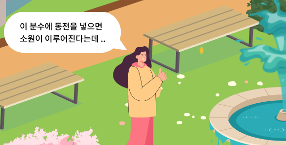
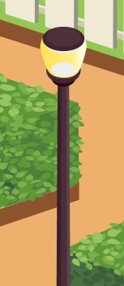
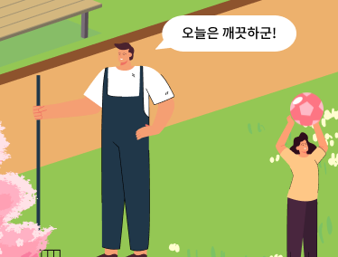
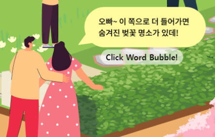
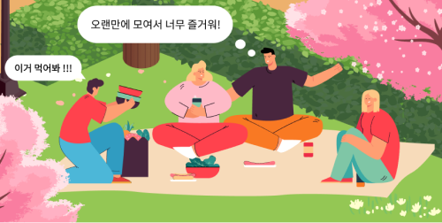

왼쪽에서 한 남자가 킥보드를 타고 등장합니다.
여유롭게 한 손으로 운전하며 유유히 반대편으로 사라지네요.

표지판을 클릭하면 새들이 놀라서 날아갑니다.
너무 놀란 나머지 한 동안은 다시 돌아오지 않을 것 같아요.

오! 분수대에 동전을 넣으면 소원이 이루어지나 보군요.
소녀의 소원을 이뤄주기 위해서 소녀를 클릭해주세요.
그럼 분수대를 향해 동전을 던집니다.
벚꽃 나무에 마우스를 갖다대어 보세요.
아름다운 건 가까이서 크게 봐야 더 아름다운 법이예요.

가로등을 클릭하면 불이 켜집니다.
아직 밝긴 하지만... 불을 켜볼까요?

청소 중인 사람에게 마우스를 갖다대어 보세요.
공원이 깨끗해서 기분이 좋으신가봐요.

여성분께서 숨겨진 벚꽃 명소가 있는 곳을 알고있나봐요!
말풍선 클릭하면 다음 페이지로 이동할 수 있습니다.
같이 벚꽃 명소로 한 번 가볼까요?

빨간 옷을 입은 남자에게 마우스를 갖다 대어보세요.
자기가 가져온 음식을 먹어보라며 권유하고 있네요.
옆에 검은 옷을 입은 남자에게도 마우스를 갖다대어 볼까요?
하하, 친구들과 오랜만에 모여서 즐거우신가봐요.